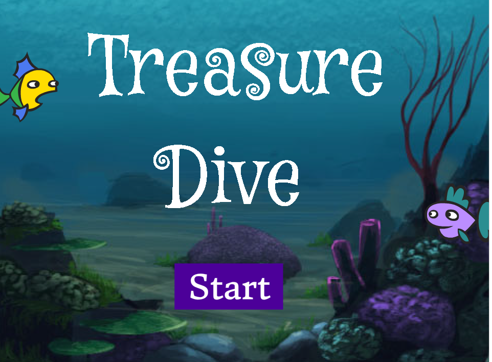

| Likes | Dislikes |
|---|---|
| Animals | Slow Walkers |
| Food | Homework |
| Sleep | Peas |
| Netflix | Spiders |
| Reading | Waking up early |
| Traveling | Long lines |
Fun fact about me: I was born in Chicago, but we moved to California when I was only a month old.
Favorite Websites:
Youtube Facebook Netflix Gmail
This is my dog, Mac. He's 4 years old, and is a mix between a Cocker Spaniel and Poodle. I love him. A lot.

This is the side scroller game that our group created. The objective of the game is for the user to obtain the key that appears towards the end of the game, while avoiding the multiple sea creatures.